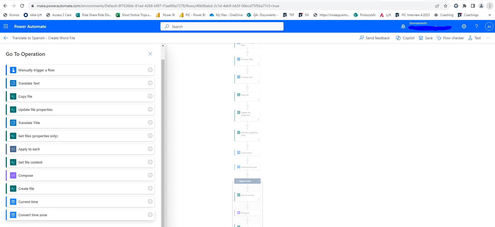

Automation refers to the use of technology and tools to perform tasks without
direct human intervention. Creates systems or processes that can operate automatically,
reducing the need for manual effort or repitive tasks.
Power Automate creates automated workflows between different applications and services.
Web Automation can provide workflows by connecting to different cloud-based applications and services.
Power Automate Desktop allows automate tasks on their local desktop environment.

Automation.
Translator English to Spanish
Power Automate Web workflow trigger manually that translate any English text to Spanish lenguage, with details such as author's name, article title, text for translation, and the link to the article.The next step involves a translation action, translation service to Spanish, ensuring a smooth transition between the two languages.Following the translation, the flow then proceeds to create a Word document. This document serves as the output and is designed to include both the original article details and the translated content in Spanish.

Word Documents generation from Excel Table
This Power Automate Web workflow, trigerred by event, is designed to enhance document generation efficiency. Operating within the Microsoft 365 environment, the workflow utilizes a Word document template and an Excel spreadsheet. By extracting various data points from the Excel table, such as names, dates, or any relevant information, the workflow dynamically customizes the Word document template. This automation ensures a seamless and personalized document creation process, significantly reducing manual effort and improving overall productivity for the user.

Filling up Web Form from Excel Table Data
The Power Automate Desktop workflow streamlines the data entry process by automating the completion of a web form. Leveraging information stored in an Excel table, the automation extracts data fields required by web form. The workflow then seamlessly navigates to the web form, populating each field with the corresponding data from the Excel table. This Power Automate Desktop solution enhances accuracy, minimizes manual data entry efforts, and ensures efficient submission of information into the targeted online form.

Web Scraping using Power Automate Desktop
Workflow excels at web scraping, systematically extracting valuable data from a designated website and organizing it into an Excel file. Utilizing a sequence of automated actions, this solution navigates through the website's pages, captures specified information, and stores it systematically in an Excel spreadsheet. This Power Automate Desktop automation provides an efficient means of aggregating data from web sources, offering a streamlined process for data retrieval and organization without manual intervention. The workflow's ability to automate the email dispatch of the Excel file further optimizes the data management process.

jchpabon@gmail.com
346-317-7255
Katy, TX 77494
United States of America
United States of America